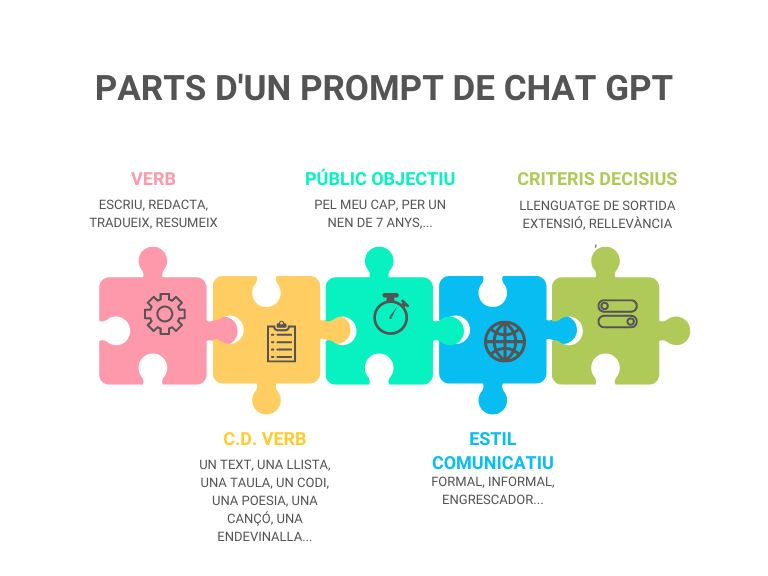

DEFINICIÓ 𝘗𝘙𝘖𝘔𝘗𝘛
Els prompts són les preguntes o instruccions que li donem a la màquina per obtenir respostes.
ANATOMIA D'UN 𝘗𝘙𝘖𝘔𝘗𝘛
És molt important saber escriure bé els "prompts" quan utilitzem el ChatGPT.
Si escrivim els "prompts" de manera clara i específica, obtindrem respostes més útils i precises.
Imagina que estàs parlant amb un amic: si fas una pregunta confusa, podria ser difícil entendre't i donar-te una resposta correcta. Amb el ChatGPT passa una cosa semblant. Si donem instruccions clares i ben plantejades, la màquina podrà entendre millor el que volem i respondre de manera més adequada. Així que recorda, quan utilitzis el ChatGPT, posa molta atenció a com escrius els "prompts" per obtenir els millors resultats possibles.

Infografia creada per Virgilio Gonzalo amb CANVA.
Anem a veure un exemple:
"Necessito un text sobre agricultura" genera:
|
L'agricultura és una activitat essencial en la vida de les persones i en el funcionament de les societats. Consisteix en el cultiu de plantes i la cria d'animals per a la producció d'aliments, fibres i altres recursos. Aquesta pràctica ancestral és la base de l'alimentació humana i juga un paper clau en l'economia global. Els agricultors treballen la terra per aconseguir collites de fruits, verdures, cereals i altres productes. Utilitzen tècniques com l'arada, la sembra i el regadiu per assegurar un creixement saludable de les plantes. A més, la investigació agrícola ha portat a l'ús de tècniques modernes com la selecció de llavors, l'ús de fertilitzants i pesticides, i la gestió eficient de recursos com l'aigua. La cria d'animals és també part important de l'agricultura, proporcionant carn, llet i altres productes derivats. Els ramaders cuiden i nodreixen els animals per assegurar la seva salut i el seu benestar. Les pràctiques agrícoles i ramaderes varien segons les regions, els climes i les necessitats locals. L'agricultura juga un paper vital en la seguretat alimentària mundial, ja que proporciona els aliments bàsics que consumim. També influeix en la sostenibilitat i la salut de l'entorn. Actualment, hi ha una creixent consciència sobre la importància de l'agricultura sostenible, que busca equilibrar la producció d'aliments amb la protecció del medi ambient i la preservació dels recursos naturals. En resum, l'agricultura és una activitat fonamental que uneix l'ésser humà amb la terra i la natura. Des de la tradició fins a la innovació, la seva influència és profunda i vital per a la nostra societat i el nostre futur. |
En canvi, "Escriu una endevinalla sobre l'agricultura per a nens de 8 anys" genera:
|
Sóc amic de la terra i del sol brillant, ¿Qui sóc? |
Exercici 2: Identifica els errors (repte)
Premeu sobre les targetes per veure els prompts erronis i les explicacions que amaguen.
Decidiu si els dos continguts (cara i revers) parlen de la mateixa errada.
Activitat 3: Reescriure el prompt
Activitat grupal
1 hora
- Llegeix el següent prompt mal redactat: "Explica'm sobre les coses interessants que fas cada dia."
- En grups petits, discuteix quins problemes o mancances identifiqueu en aquest prompt. Que potser no queda clar o és massa obert?
- Reescriviu el prompt de forma que sigui més clar, precís i específic. Assegureu-vos d'afegir detalls que indiquin clarament què vols saber i quin tipus d'informació espereu obtenir.
- Els integrants del grup han de penjar un arxiu a la tasca del Classroom amb el prompt reescrit, indicant les millores i la finalitat o utilitat que tenen. Es valorarà la creativitat i innovació, així com la integració de criteris de protecció de dades personals.
- Compartiu les versions millorades del prompt amb els altres grups i discutiu com les millores fan que la pregunta sigui més comprensible i efectiva.
Rúbrica Activitat 3: Reescriure el prompt
- Activitat
- Nom
- Data
- Puntuació
- Notes
- Reinicia
- Imprimeix
- Aplica
- Finestra nova
| Assoliment alt | Assoliment mitjà | Assoliment baix | |
|---|---|---|---|
| Estructura i Organització | Estructura clara i lògica, amb una introducció, seccions ben definides i una conclusió. (1,5) | Estructura ordenada, amb seccions coherents i una conclusió adequada. (1) | Estructura adequada, però amb algunes mancances en la seqüència o organització. (0,5) |
| Creativitat i Disseny Visual | Disseny atractiu i coherent amb el contingut, ús eficaç de colors, fonts i elements visuals. (1,5) | Disseny adequat amb algun element visual, però amb algunes oportunitats d'optimització. (1) | Disseny bàsic o manca de coherència visual, amb pocs elements destacats. (0,5) |
| Creació i Integració de Solucions Innovadores | El prompt incorpora detalls rellevants i un enfocament clar. El prompt mostra una profunda comprensió de la finalitat de la pregunta i l'audiència. (3) | El prompt és, incorpora detalls que milloren la seva claredat i especificitat. El prompt millorat reflecteix una comprensió adequada de la finalitat i l'audiència. (2) | El prompt mostra algunes millores, però la claredat i l'especificitat podrien ser millorades. El prompt millorat mostra una comprensió limitada de la finalitat i l'audiència. (1) |
| Identificació i Anàlisi de Riscos | Identifiquen riscos i les mesures preventives i correctives proposades són detallades, realistes i adequades per protegir les dades personals en situacions reals. (3) | Identifiquen algun risc i les mesures preventives i correctives proposades són adequades, encara que podrien haver estat més detallades. (2) | Identifiquen de manera bàsica alguns riscos i amenaces digitals, però la seva anàlisi i les mesures proposades manquen de detall i profunditat. (1) |